Overlap instead of gradient
A gradient would have given the same sense of depth and dated within two years. The darker intersection is structural — it survives single-colour printing, embroidery, and being scaled to a favicon.
Vyptelabs builds infrastructure for developers. The identity had to work at app-icon size, on a hoodie, and across a billboard — without losing the same mark.
The brief was an identity. What the company actually needed was a system — because an infrastructure business appears in more places than most: a developer's home screen, a conference tote, a landing page, a social avatar cropped to a circle. A mark that only works on a white artboard fails on contact with all of that.
Developer-tools brands converge hard. Geometric sans, a gradient, a monogram in a rounded square. The category is legible and completely interchangeable.
The mark also needed to hold at 40 pixels. Anything with fine detail or a full wordmark inside it would have disappeared at icon size — where a developer actually meets the brand most often.
Two overlapping V-forms with a darker intersection where they cross. It reads as a V, as forward motion, and as two things joining — which is what infrastructure does. The overlap gives it depth without a gradient.
A single saturated green against black. One colour, applied without exception, so the brand is recognisable from a distance and in a thumbnail alike.
A gradient would have given the same sense of depth and dated within two years. The darker intersection is structural — it survives single-colour printing, embroidery, and being scaled to a favicon.
A fuller palette would have given more flexibility and less recognition. Restricting the system to one accent means the colour does the identifying work before the mark is even read.
Icon, social, web, product, apparel and environment were designed as part of the identity rather than after it — which is how you find out early that a mark doesn't hold.
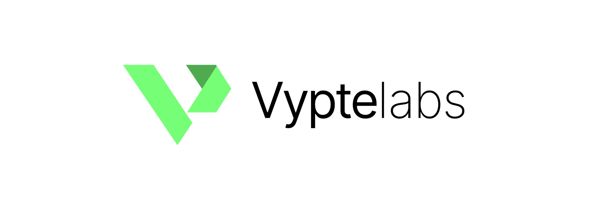
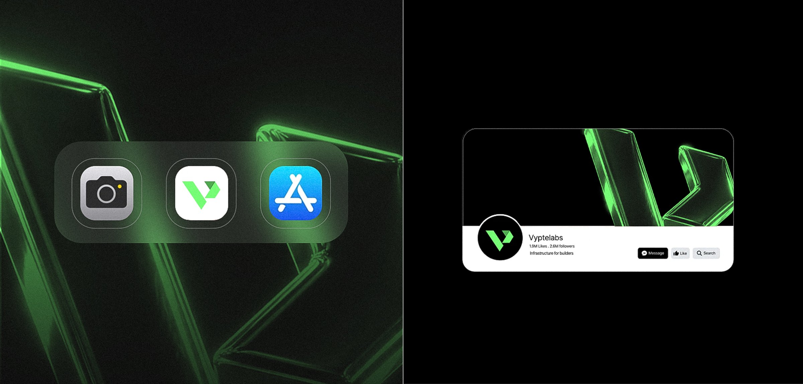
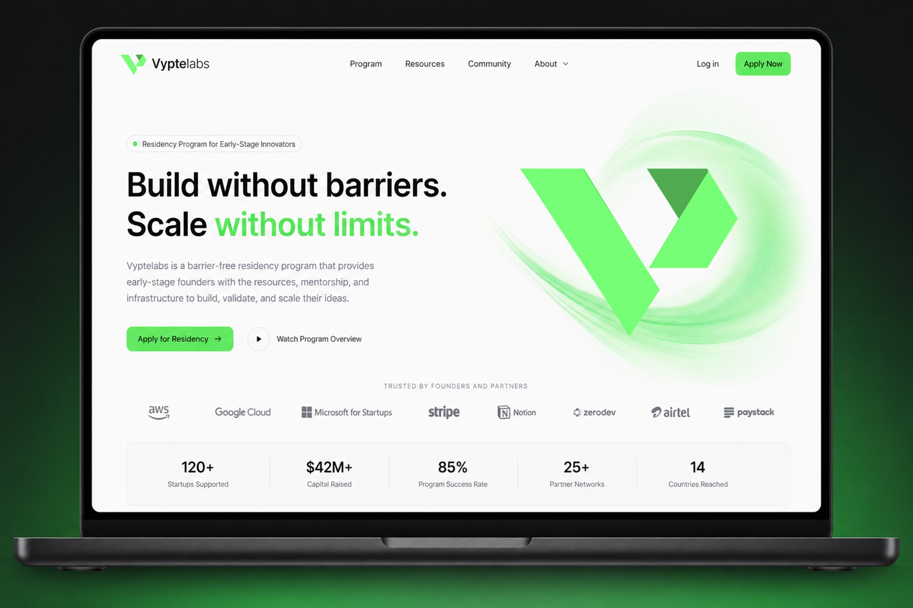
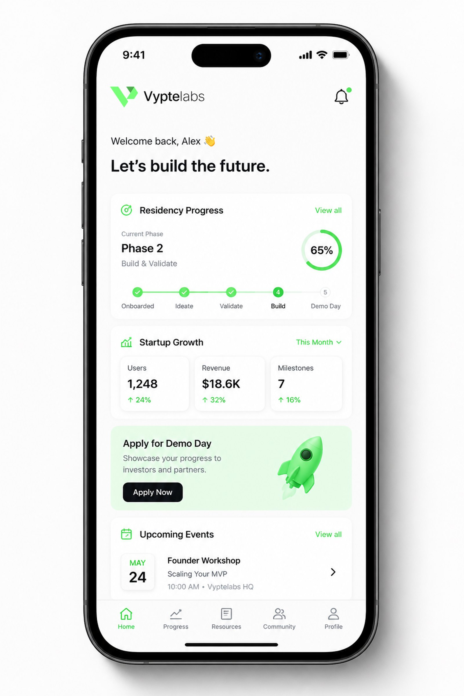
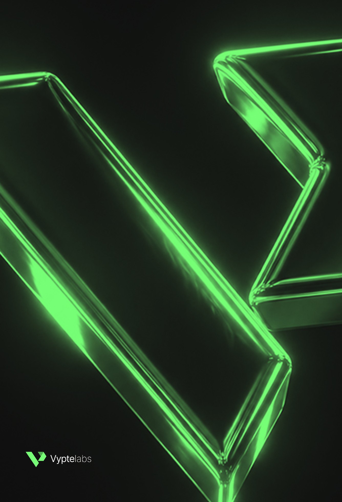
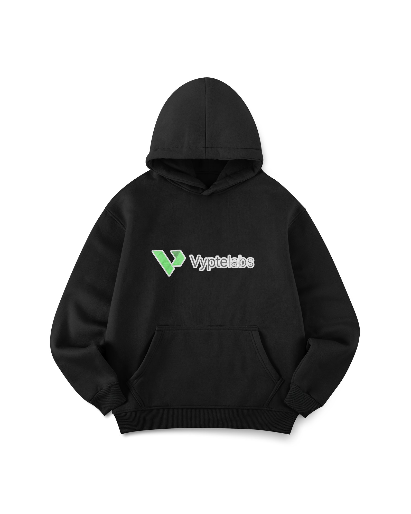
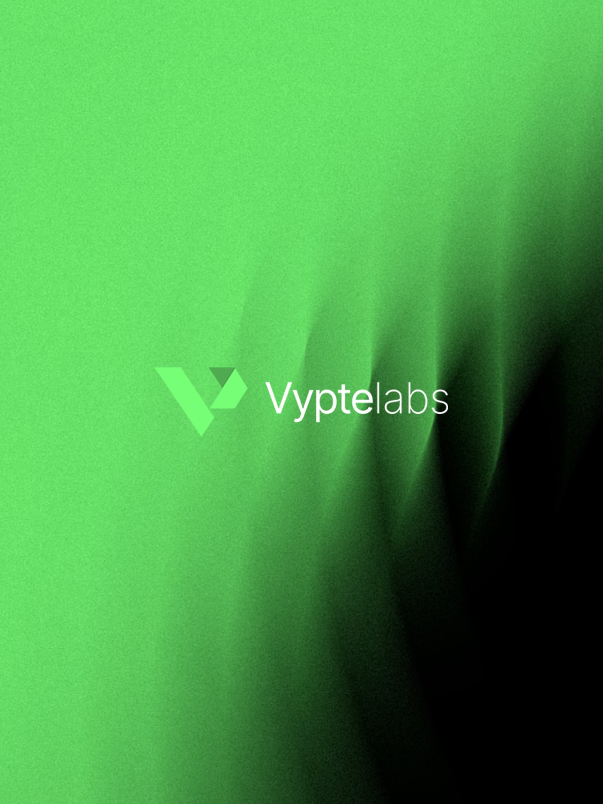
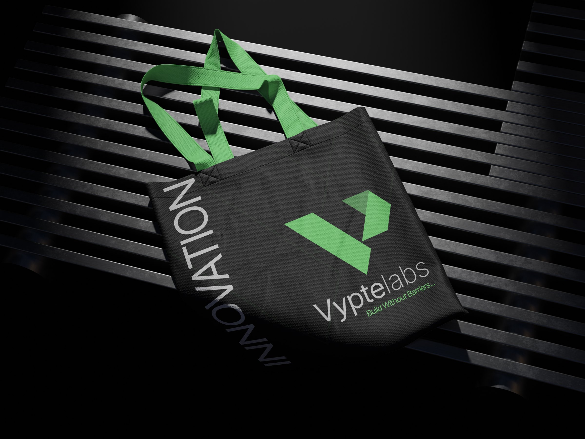
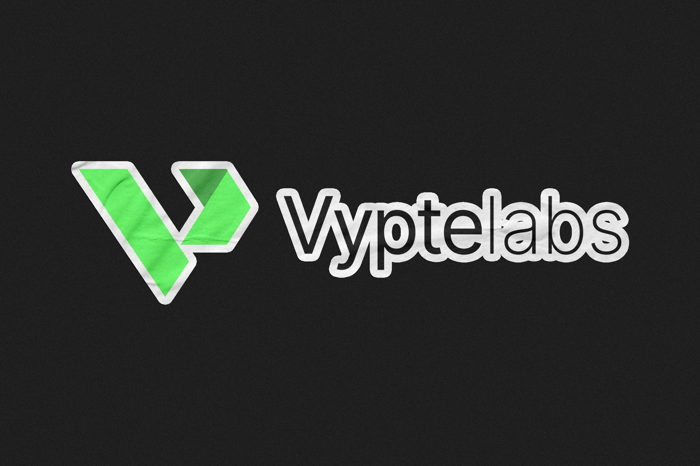
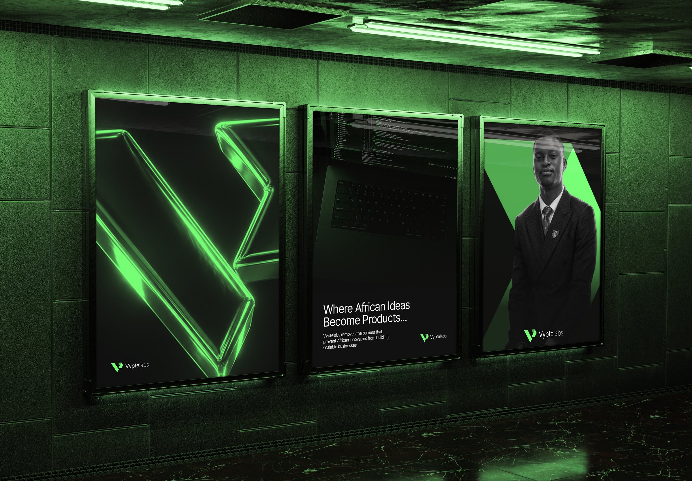
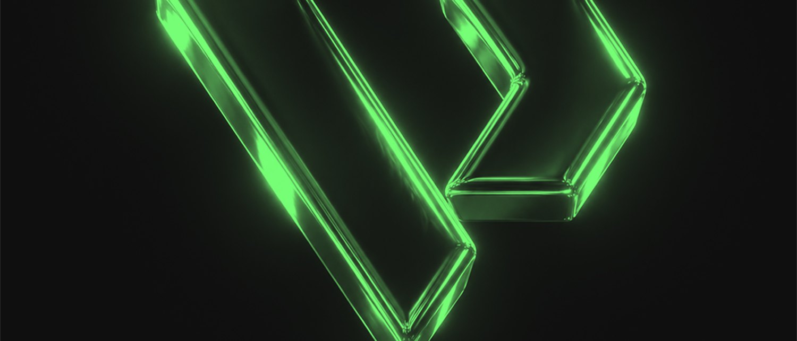